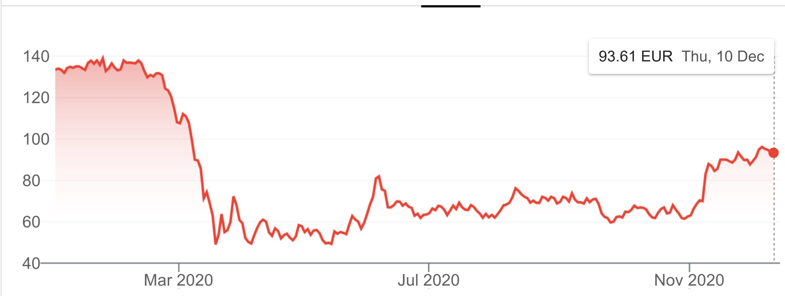
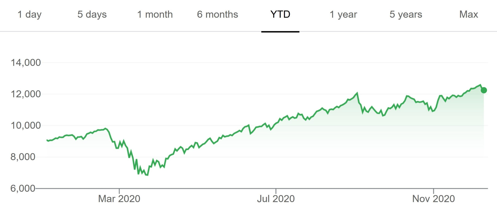
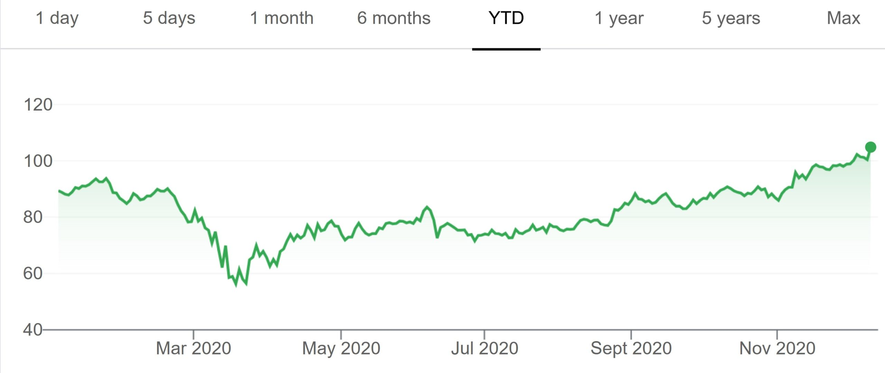

Stock markets give us a glimpse what people with money have deduced about world events before they happen. Investors can make mistakes, sometimes terrible mistakes, but they are honest mistakes: you don’t buy a stock at a 100 if you actually honestly believe that same stock will only cost 50 next week. So whilst you might be wrong in following a herd, or you may be mislead, the price of stocks still reflects an honest valuation at that moment. This makes stock markets very useful for reading political and economic events, though interpreting them requires a lot of knowledge of the possible influences on those prices. I want to tell the story of how the markets seem to have read the covid-mania of 2020 in 3 graphs, where the last one is the most depressing one.
The first graph shows the stock value of Airbus, a European company that makes airplanes. The restrictions on travel throughout the world decimated the industry it made planes for, such that the number of orders for new planes dropped from about a 100 a month to nothing.

This graph first off shows you the whopping 65% drop from the end of February to March 18th. Thus the markets in early March saw coming that governments were going to make life tough for the airline industry, long before many governments actually instigated lockdowns or travel restrictions. The market analysts were quicker than me, because I only started to really see what was coming around March 10th. The graph thus shows you the uncanny speed with which financial analysts are reading future political decisions.
You see an uptick in June when restrictions were eased in many countries and the markets had some reasonable hope that the covid-related travel-restrictions were going to come to an end soon, though not a huge amount of hope because the uptick was ‘only’ 20% or so. That uptick probably also had to do with the fact that governments were bailing out their airline companies, so investors knew bankruptcy was not going to happen. Airbus was too big to fail.
You see the drop in October when markets realised Europe and some US states were going to lock down again, even though that only actually happened a month or so later. The uptick in November then probably reflects the fact that markets started to believe vaccines would actually come in much earlier than previously thought and would allow some degree of normalisation, though still estimating that Airbus was worth 30% less than at the start of 2020.
So the Airbus stock price tells you the standard story of what forward-looking financial analysts were thinking at different moments about the political economy of the pandemic, pre-guessing lockdowns, reduced restrictions, a second lockdown, and vaccines. What you also see in the strong price changes though is that they did not see things coming way in advance, but more like a few weeks in advance, and that they got some things ‘wrong’ in a longer-run sense: if you’d had known on March 1st what was going to happen with lockdowns, you would have made a killing betting on a big downturn the next two weeks. If you’d have known markets would believe in vaccines in November, then you could have made a killing by buying up this stock in August. Hence, in many ways, the Airbus stock price is a standard, but beautiful example of how stock markets tell you of the reality and limitations of forward-looking information in prices.
The second graph I want to talk about is that of the NASDAQ, which is the main stock market for the US Big Tech companies.

This graph tells you a very different story. Just as with Airbus, there was a big general crunch early March of around 30% of the initial value, which was less severe than with airbus that lost 65% of its value. So there is the same story of how financial analysts predicted the lockdowns, but it also shows they predicted that the policies would hurt Big Tech less than it would hurt the airline industry. Still, they anticipated covid-mania would be bad for Big Tech.
The second big thing about the graph is the continued rise from April till about August, increasing the index 20% above February prices. So unlike Airbus that was still 50% down in August, the markets had learned that covid-policies were actually really good for Big Tech, which was not anticipated but came as a surprise. Big Tech was the big facilitator of covid-mania, something the markets started to realise around late April, so pretty quickly. They started to notice the increase in online shopping, online job search, online socialising, online everything. What they also learned was that governments were not stopping it by hampering home deliveries or using the opportunity to muscle in on Big Tech monopolies.
The drop in October is relatively small and probably some kind of correction on the assessment of how well things were going for Big Tech. The blip down at the very end is due to the US authorities talking about breaking up Facebook and perhaps other Big Tech companies.
So the story of the Nasdaq tells you that the benefits Big Tech got from covid-policies were unanticipated but very large (almost a doubling since the end of March). This of course tells you exactly why Big Tech is so keen on extending lockdowns and the covid-mania via censorship and disinformation: long may the good times last for them! And the markets clearly anticipate there will not be much of a backlash.
Whilst the second graph is depressing enough, the third one is really nasty in my view. It’s the story of Starbucks, the coffee chain.

Now, this stock first behaves the way you’d now expect: just like Airbus, coffee chains are really hampered in their business by the lockdowns and other covid-mania policies, so the markets anticipate a big drop in business, and thus we see a 40% drop in share value early March. The downturn is also what the company itself reports, flagging in June that it had over 3 billion dollars less in sales, and that is just from the preceding quarter.
The first surprise is the uptick in April-May, probably related to government subsidies which big companies are good at securing.
The depressing bit is the large uptick after August: an increase of about 30% coinciding with the new lockdowns, making the company worth 10% more mid December than in February, even though turnover is still highly depressed and whilst it will probably take take years for coffee-fueled office life and tourism to return to normal. What is going on, you might wonder? Why are we not seeing a lower valuation for Starbucks at the end of such a terrible year for them, just like we saw for Airbus?
The Financial Times tells us the likely reason: many of the smaller chains (like Nero) and independent coffee shops are going bankrupt, leaving Starbucks a bigger market share. This is probably also why by now, the Dow Jones index in the US is above its pre-March level and why the Indian stock-market (the Nifty50) is up almost 15% on the start of this year despite a drop in GDP of over 10%: big business is now expected to gain from the demise of small business that is squashed by the covid-policies. This too was not foreseen early on.
I find this quite depressing because in a way I am looking at the demise of independent and smaller businesses in this graph, with the bigger companies soaking up the additional demand. It’s the modern version of the enslavement of a once free population: from independent coffee shop owner to an employee who will have to clock in hours, abide by company procedures, and do tonnes of corporate responsibility training. From proud workers to schmucks who have to smile on demand and sign non-disclosure contracts they don’t understand.
So there you have the basic story of the covid-mania in three stocks: a hit of 65% to the travel industry that became 30% when government subsidies and vaccines softened the blow; the unexpected gains of Big Tech making them have an interest in continued covid-mania; and the decimation-by-policy of the independent smaller businesses leading to gains among the big boys, heralding a more feudal and more unequal future for the vast majority. Let's hope the markets are wrong about that.
The markets have reacted with a powerful logic to events of the past year. There is no disconnect between the markets and real economy as a lot of people thought back in April and May. It's just that the markets mainly reflect the larger companies. The Starbucks story is repeated in other sectors, where those that go under are 'sales donors' for the survivors with stronger balance sheets, which invariably are larger companies.
There is another factor at work too. Starbucks and a lot of the larger players in the food business have at least partly offset lost customer visits with a booming online delivery business to homes and offices. A lot of investment is being made in the physical and digital infrastructure to make this happen. Thus, you're seeing a holy alliance at work between Big Tech and the large food and restaurant chains.
yep, that indeed seems the big structural economic story of what is happening during the covid-mania: the wiping out of the independent middle classes, replaced by expanding big companies.
Just as politics is seeing this enormous power grab by the center, so too the economy. We are witnessing the construction of modern feudalism: the rise of economic barons on the one hand and political kings supported by technocratic courts on the other hand. Wow. And meanwhile the population is glued to the theater of case numbers and whether masks 'work'. They work like a charm, but then towards a completely different outcome than anything to do with viruses. Wow, just wow.
Very scary stuff though. This kind of highly-concentrated totalitarianism is not compatible with mass-democracy. Something has got to give. That is why I think we are either going to get a restoration (scenario 1 of the recent history post), one hell of a backlash (scenario 3 in my recent history post), or the creation of totalitarian techno-fascist states (scenario 2). Obviously, we are at the moment speeding on the road of scenario 2, but democracy is resilient and not dead yet.
Fascinating post Paul,
A few random comments:
1) I've long been interested in why large companies are stronger financially than smaller ones – in pretty much every way. It might sound obvious, but it's not to me. It suggests a pretty substantial imperfection in the capital market. Anyway, I don't have any fancy ideas to fix it.
2) I've always been kind of gobsmacked by the difference in profitability between traditional high tech companies like Boeing and new hi-tech companies like Google. It seems like the remarkable skills Boeing must package up must be a greater achievement than Google's achievement. It also takes much greater risks – as we've seen in the pandemic and in the 737 Max. But it's profitability is so-so. Ditto lots of old stalwarts of the US corporate scene like GE.
3) I wonder how much what might be called the Starbucks effect reflects the success of American corporates on getting their hands in the cookie jar. In Australia most support has gone to individuals – it's been pretty smoothly rolled out at least as far as it's practically possible to do such things. What support that's gone to business that I know of has gone to small business.
thx Nick,
yeah, good questions. Others will know better, but let me try to answer.
1. Financially stronger. Well, they will have better relations with bank and the government. As I said in Game of Mates, lots of rules are a natural monopoly. And what do you need to do to get government and financial support at this moment? Fill out lots of forms, know a huge and quickly changing regulatory landscape, and get to the right people to bend regulations your way. Big is better set up to that, with its HR and Financial divisions. So I suspect the answer is that finance and subsidies are nowadays a matter of a large fixed investment in understanding, applying, circumventing, and manipulating regulation. The bigger one is the less that fixed investment hurts you.
2. Yeah, I suspect the high big tech profitability is a matter of market maturity. Big tech is still in the growth phase whilst airline production is a crystallized duopoly for many years, so no more small players to muscle out but simply one big competitor that tries to undercut you. I think the same holds for cars and other industries: they have chrystalised markets. Big Tech still has true monopolies in them.
3. Cookie jar. Sounds very possible, but the Indian stock markets tell me that thriving in a downturn does not just hold for American companies. It also has to be true for the Indian ones. So one suspects it is indeed about more generally returns to scale in compliance and regulation manipulation. Interestingly, the German stock exchange is no more than 3% off its February peak. The Australian stocks are still 10% of their 2020 peak.
Plenty of large companies are weak financially and plenty of them have gone under too. In hard times though, the survivors are the ones with big cash reserves and/or superior access to credit facilities, which are usually larger companies. I suspect also that larger companies have more scope for cutting costs in bad times. They can cut their workforces, suspend dividends, use their market power to delay payments to suppliers, reduce inventories and so on. In the case of Starbucks or another large retail chain, they can close marginal stores and at the same time enjoy sales donated to them by freshly bankrupted competitors.
Re Boeing's profitability, I'm not an expert in the aviation industry, but I'd have thought Boeing's market power has been under the cosh for a long time now. If I were CEO of a big airline, I'd have gotten really good at playing Boeing and Airbus off against each other.
Perhaps an additional factor relating to the big company effect is that interest rates will be about zero from now until ... who knows when. Presumably this means big companies with debt will be able to use the bond market to repackage their debt into essentially free loans.
The essence of monopoly is that the fewer the competitors, the harder it is to play them off against each other. Airlines are a very competitive business. Airline manufacture is a very uncompetitive business if you're limited to two players, though the Chinese seem to be coming on stream with another wide-bodied jet available in a few years.
so I guess I’d be a bad CEO! Unless I was under the grave misapprehension that monopoly and duopoly were different. My bad.
The trend of the west heading to a technocratic neo-feudalism for the last half century or so. That trend has little to do with the response to covid other than in the never let a good crisis go to waste sense.
Conrad In all of world history there has never been a time where negative interest (or close to negative interest )rates plus the sheer scale of money printing was, global. God only knows how this will play out.
Yep, it should be exciting. My bet is that some countries with export surpluses will get sick of other countries that don't and that just print money to get stuff for free. Presumably that will force the interest rates of those countries up whether they like it or not. Of course, as of now, many of the exporting countries like China are happy to give stuff away for free if it keeps their own people employed, and I imagine that can go on for a long time.
Who isn’t printing money? Feels like everybody is in someway or another involved.
While history is replete with nations that have gone down this path there has never been a time like this.
Mind you today I was at Sydney Unis new Chau Chuck Wing museum looking at their collection of mummies( and the wonder cabinet in general),surely it is more than conceivable that our modern obsession with ‘financial’ etc is no more based on results or reality than the Pharos obsession with immortality was .
Perhaps it is all just ,strut and fret ,signifying stuff all.
that's certainly well arguable for the US, Australia, and the UK. But it wasn't obviously true for the EU. Inequality had been fairly constant for decades in many countries. Several growing industries were quite small scale (local service industries, tourism, retail). It is not looking good now though in much of the EU.
> " ...we are at the moment speeding on the road of scenario 2 ..."
Yes. This will be (is) accelerated by the planet savers "carbon-neutral" impositions (which means wherever their moving goalposts can temporarily land).
How so ? Increasing restriction of motor vehicle mobility, rationing of power outside the cities, corporate requirements of customers (banks, supermarkets already happening), tracking of individuals by govt and Big Tech through electronic media (already happening)
Significant loss of small business opportunities, and indeed existing assets now destroyed, is a Big Gov, Big Bureaucracy, Big Union dream come true at last ... those pesky individuals grounded at last.
Leaving aside Paul's polemics ("covid mania" etc), this is really good and interesting analysis.
Marxists such as Baran and Sweezy held that "monopoly capitalism" is a product of recessions precisely through the mechanism Paul has put here - they destroy the petit bourgeois (you can, of course, go further with the Kaleckian view that this is one reason big capital is much less averse to recessions than you'd think). The Austrians held the opposite view - recessions are salutary and necessary for progress by weeding out inefficient firms.
It seems to me this natural experiment lends support to the Marxists.